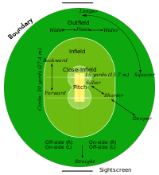
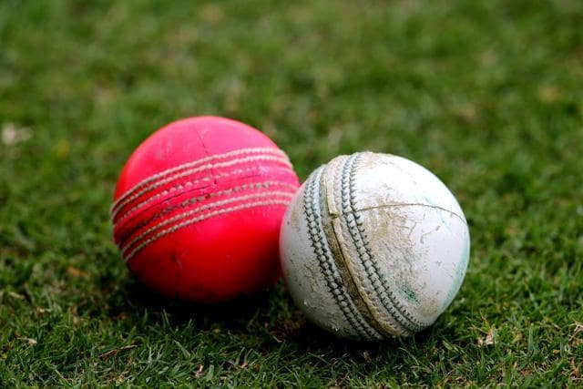

CRICKET
Cricket is a bat-and-ball game played between two teams of eleven players on a field at the centre of which is a 22-yard (20-metre) pitch with a wicket at each end, each comprising two bails balanced on three stumps. The batting side scores runs by striking the ball bowled at one of the wickets with the bat and then running between the wickets, while the bowling and fielding side tries to prevent this (by preventing the ball from leaving the field, and getting the ball to either wicket) and dismiss each batter (so they are "out"). Means of dismissal include being bowled, when the ball hits the stumps and dislodges the bails, and by the fielding side either catching the ball after it is hit by the bat, but before it hits the ground, or hitting a wicket with the ball before a batter can cross the crease in front of the wicket. When ten batters have been dismissed, the innings ends and the teams swap roles. The game is adjudicated by two umpires, aided by a third umpire and match referee in international matches. They communicate with two off-field scorers who record the match's statistical information.
Forms of cricket range from Twenty20, with each team batting for a single innings of 20 overs (each "over" being a set of 6 fair opportunities for the batting team to score) and the game generally lasting three hours, to Test matches played over five days. Traditionally cricketers play in all-white kit, but in limited overs cricket they wear club or team colours. In addition to the basic kit, some players wear protective gear to prevent injury caused by the ball, which is a hard, solid spheroid made of compressed leather with a slightly raised sewn seam enclosing a cork core layered with tightly wound string.
The earliest reference to cricket is in South East England in the mid-16th century. It spread globally with the expansion of the British Empire, with the first international matches in the second half of the 19th century. The game's governing body is the International Cricket Council (ICC), which has over 100 members, twelve of which are full members who play Test matches. The game's rules, the Laws of Cricket, are maintained by Marylebone Cricket Club (MCC) in London. The sport is followed primarily in South Asia, Australasia, the United Kingdom, Southern Africa and the West Indies.
Women's cricket, which is organised and played separately, has also achieved international standard. The most successful side playing international cricket is Australia, which has won seven One Day International trophies, including five World Cups, more than any other country and has been the top-rated Test side more than any other country.
Cricket is one of many games in the "club ball" sphere that basically involve hitting a ball with a hand-held implement; others include baseball (which shares many similarities with cricket, both belonging in the more specific bat-and-ball games category), golf, hockey, tennis, squash, badminton and table tennis. In cricket's case, a key difference is the existence of a solid target structure, the wicket (originally, it is thought, a "wicket gate" through which sheep were herded), that the batter must defend.[4] The cricket historian Harry Altham identified three "groups" of "club ball" games: the "hockey group", in which the ball is driven to and from between two targets (the goals); the "golf group", in which the ball is driven towards an undefended target (the hole); and the "cricket group", in which "the ball is aimed at a mark (the wicket) and driven away from it".
It is generally believed that cricket originated as a children's game in the south-eastern counties of England, sometime during the medieval period. Although there are claims for prior dates, the earliest definite reference to cricket being played comes from evidence given at a court case in Guildford in January 1597 (Old Style, equating to January 1598 in the modern calendar). The case concerned ownership of a certain plot of land and the court heard the testimony of a 59-year-old coroner, John Derrick, who gave witness that:Being a scholler in the ffree schoole of Guldeford hee and diverse of his fellows did runne and play there at creckett and other plaies.
Given Derrick's age, it was about half a century earlier when he was at school and so it is certain that cricket was being played c. 1550 by boys in Surrey. The view that it was originally a children's game is reinforced by Randle Cotgrave's 1611 English-French dictionary in which he defined the noun "crosse" as "the crooked staff wherewith boys play at cricket" and the verb form "crosser" as "to play at cricket".
One possible source for the sport's name is the Old English word "cryce" (or "cricc") meaning a crutch or staff. In Samuel Johnson's Dictionary, he derived cricket from "cryce, Saxon, a stick". In Old French, the word "criquet" seems to have meant a kind of club or stick. Given the strong medieval trade connections between south-east England and the County of Flanders when the latter belonged to the Duchy of Burgundy, the name may have been derived from the Middle Dutch (in use in Flanders at the time) "krick"(-e), meaning a stick (crook). Another possible source is the Middle Dutch word "krickstoel", meaning a long low stool used for kneeling in church and which resembled the long low wicket with two stumps used in early cricket. According to Heiner Gillmeister, a European language expert of Bonn University, "cricket" derives from the Middle Dutch phrase for hockey, met de (krik ket)sen (i.e., "with the stick chase").Gillmeister has suggested that not only the name but also the sport itself may be of Flemish origin.
Although the main object of the game has always been to score the most runs, the early form of cricket differed from the modern game in certain key technical aspects; the North American variant of cricket known as wicket retained many of these aspects. The ball was bowled underarm by the bowler and along the ground towards a batter armed with a bat that in shape resembled a hockey stick; the batter defended a low, two-stump wicket; and runs were called notches because the scorers recorded them by notching tally sticks.
In 1611, the year Cotgrave's dictionary was published, ecclesiastical court records at Sidlesham in Sussex state that two parishioners, Bartholomew Wyatt and Richard Latter, failed to attend church on Easter Sunday because they were playing cricket. They were fined 12d each and ordered to do penance. This is the earliest mention of adult participation in cricket and it was around the same time that the earliest known organised inter-parish or village match was played – at Chevening, Kent. In 1624, a player called Jasper Vinall died after he was accidentally struck on the head during a match between two parish teams in Sussex.
Cricket remained a low-key local pursuit for much of the 17th century. It is known, through numerous references found in the records of ecclesiastical court cases, to have been proscribed at times by the Puritans before and during the Commonwealth. The problem was nearly always the issue of Sunday play as the Puritans considered cricket to be "profane" if played on the Sabbath, especially if large crowds or gambling were involved.
According to the social historian Derek Birley, there was a "great upsurge of sport after the Restoration" in 1660. Several members of the court of King Charles II took a strong interest in cricket during that era. Gambling on sport became a problem significant enough for Parliament to pass the 1664 Gambling Act, limiting stakes to £100 which was, in any case, a colossal sum exceeding the annual income of 99% of the population. Along with prizefighting, horse racing and blood sports, cricket was perceived to be a gambling sport. Rich patrons made matches for high stakes, forming teams in which they engaged the first professional players. By the end of the century, cricket had developed into a major sport that was spreading throughout England and was already being taken abroad by English mariners and colonisers – the earliest reference to cricket overseas is dated 1676. A 1697 newspaper report survives of "a great cricket match" played in Sussex "for fifty guineas apiece" – this is the earliest known contest that is generally considered a First Class match.
The patrons, and other players from the social class known as the "gentry", began to classify themselves as "amateurs" to establish a clear distinction from the professionals, who were invariably members of the working class, even to the point of having separate changing and dining facilities. The gentry, including such high-ranking nobles as the Dukes of Richmond, exerted their honour code of noblesse oblige to claim rights of leadership in any sporting contests they took part in, especially as it was necessary for them to play alongside their "social inferiors" if they were to win their bets. In time, a perception took hold that the typical amateur who played in first-class cricket, until 1962 when amateurism was abolished, was someone with a public school education who had then gone to one of Cambridge or Oxford University – society insisted that such people were "officers and gentlemen" whose destiny was to provide leadership.[34] In a purely financial sense, the cricketing amateur would theoretically claim expenses for playing while his professional counterpart played under contract and was paid a wage or match fee; in practice, many amateurs claimed more than actual expenditure and the derisive term "shamateur" was coined to describe the practice.
The game underwent major development in the 18th century to become England's national sport.[37] Its success was underwritten by the twin necessities of patronage and betting.[38] Cricket was prominent in London as early as 1707 and, in the middle years of the century, large crowds flocked to matches on the Artillery Ground in Finsbury. The single wicket form of the sport attracted huge crowds and wagers to match, its popularity peaking in the 1748 season. Bowling underwent an evolution around 1760 when bowlers began to pitch the ball instead of rolling or skimming it towards the batter. This caused a revolution in bat design because, to deal with the bouncing ball, it was necessary to introduce the modern straight bat in place of the old "hockey stick" shape.
The Hambledon Club was founded in the 1760s and, for the next twenty years until the formation of Marylebone Cricket Club (MCC) and the opening of Lord's Old Ground in 1787, Hambledon was both the game's greatest club and its focal point. MCC quickly became the sport's premier club and the custodian of the Laws of Cricket. New Laws introduced in the latter part of the 18th century included the three stump wicket and leg before wicket (lbw).
The 19th century saw underarm bowling superseded by first roundarm and then overarm bowling. Both developments were controversial. Organisation of the game at county level led to the creation of the county clubs, starting with Sussex in 1839. In December 1889, the eight leading county clubs formed the official County Championship, which began in 1890.
The most famous player of the 19th century was W. G. Grace, who started his long and influential career in 1865. It was especially during the career of Grace that the distinction between amateurs and professionals became blurred by the existence of players like him who were nominally amateur but, in terms of their financial gain, de facto professional. Grace himself was said to have been paid more money for playing cricket than any professional.
In cricket, the rules of the game are specified in a code called The Laws of Cricket (hereinafter called "the Laws") which has a global remit. There are 42 Laws (always written with a capital "L"). The earliest known version of the code was drafted in 1744 and, since 1788, it has been owned and maintained by its custodian, the Marylebone Cricket Club (MCC) in London.
Cricket is a bat-and-ball game played on a cricket field (see image, right) between two teams of eleven players each.[64] The field is usually circular or oval in shape and the edge of the playing area is marked by a boundary, which may be a fence, part of the stands, a rope, a painted line or a combination of these; the boundary must if possible be marked along its entire length.
In the approximate centre of the field is a rectangular pitch (see image, below) on which a wooden target called a wicket is sited at each end; the wickets are placed 22 yards (20 m) apart.[66] The pitch is a flat surface 10 feet (3.0 m) wide, with very short grass that tends to be worn away as the game progresses (cricket can also be played on artificial surfaces, notably matting). Each wicket is made of three wooden stumps topped by two bails.
As illustrated above, the pitch is marked at each end with four white painted lines: a bowling crease, a popping crease and two return creases. The three stumps are aligned centrally on the bowling crease, which is eight feet eight inches long. The popping crease is drawn four feet in front of the bowling crease and parallel to it; although it is drawn as a twelve-foot line (six feet either side of the wicket), it is, in fact, unlimited in length. The return creases are drawn at right angles to the popping crease so that they intersect the ends of the bowling crease; each return crease is drawn as an eight-foot line, so that it extends four feet behind the bowling crease, but is also, in fact, unlimited in length.
The innings (ending with 's' in both singular and plural form) is the term used for each phase of play during a match. Depending on the type of match being played, each team has either one or two innings. Sometimes all eleven members of the batting side take a turn to bat but, for various reasons, an innings can end before they have all done so. The innings terminates if the batting team is "all out", a term defined by the Laws: "at the fall of a wicket or the retirement of a batter, further balls remain to be bowled but no further batter is available to come in".[69] In this situation, one of the batters has not been dismissed and is termed not out; this is because he has no partners left and there must always be two active batters while the innings is in progress.
An innings may end early while there are still two not out batters:
The Laws state that, throughout an innings, "the ball shall be bowled from each end alternately in overs of 6 balls". The name "over" came about because the umpire calls "Over!" when six balls have been bowled. At this point, another bowler is deployed at the other end, and the fielding side changes ends while the batters do not. A bowler cannot bowl two successive overs, although a bowler can (and usually does) bowl alternate overs, from the same end, for several overs which are termed a "spell". The batters do not change ends at the end of the over, and so the one who was non-striker is now the striker and vice versa. The umpires also change positions so that the one who was at "square leg" now stands behind the wicket at the non-striker's end and vice versa.
The bat is made of wood, usually Salix alba (white willow), and has the shape of a blade topped by a cylindrical handle. The blade must not be more than 4.25 inches (10.8 cm) wide and the total length of the bat not more than 38 inches (97 cm). There is no standard for the weight, which is usually between 2 lb 7 oz and 3 lb (1.1 and 1.4 kg).
The ball is a hard leather-seamed spheroid, with a circumference of 9 inches (23 cm). The ball has a "seam": six rows of stitches attaching the leather shell of the ball to the string and cork interior. The seam on a new ball is prominent and helps the bowler propel it in a less predictable manner. During matches, the quality of the ball deteriorates to a point where it is no longer usable; during the course of this deterioration, its behaviour in flight will change and can influence the outcome of the match. Players will, therefore, attempt to modify the ball's behaviour by modifying its physical properties. Polishing the ball and wetting it with sweat or saliva is legal, even when the polishing is deliberately done on one side only to increase the ball's swing through the air, but the acts of rubbing other substances into the ball, scratching the surface or picking at the seam are illegal ball tampering.
1. Umpire
2. Wicket
3. Non-Striking batter
4. Bowler
5. Ball
6. Pitch
7. Popping crease
8. Striking batter
9. Wicket
10. Wicket-Keeper
11. First slip
12. Return crease
In the photo, the two batters (wearing yellow) have taken position at each end of the pitch. Three members of the fielding team (wearing dark blue) are in shot. One of the two umpires (1; wearing white hat) is stationed behind the wicket at the bowler's end of the pitch. The bowler is bowling the ball from his end of the pitch to the batter at the other end who is called the "striker". The other batter at the bowling end is called the "non-striker". The wicket-keeper, who is a specialist, is positioned behind the striker's wicket and behind him stands one of the fielders in a position called "first slip". While the bowler and the first slip are wearing conventional kit only, the two batters and the wicket-keeper are wearing protective gear including safety helmets, padded gloves and leg guards (pads).
While the umpire in shot stands at the bowler's end of the pitch, his colleague stands in the outfield, usually in or near the fielding position called "square leg", so that he is in line with the popping crease at the striker's end of the pitch. The bowling crease (not numbered) is the one on which the wicket is located between the return creases. The bowler intends to hit the wicket with the ball or, at least, to prevent the striker from scoring runs. The striker intends, by using his bat, to defend his wicket and, if possible, to hit the ball away from the pitch in order to score runs.
Some players are skilled in both batting and bowling, or as either of these as well as wicket-keeping, so are termed all-rounders. Bowlers are classified according to their style, generally as fast bowlers, seam bowlers or spinners. Batters are classified according to whether they are right-handed or left-handed.